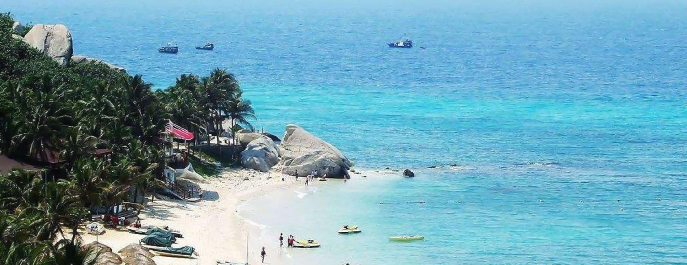
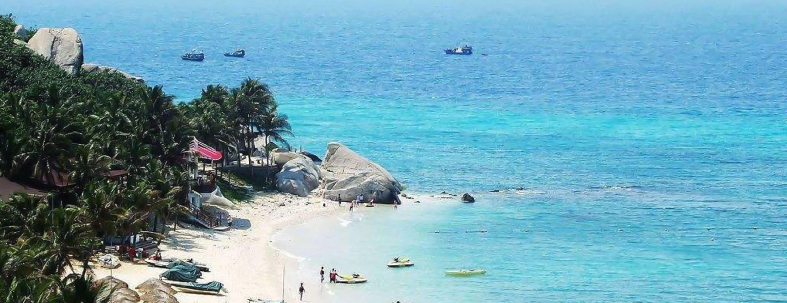

穿越中...
穿越中...
 千亿级像素全景图，鼠标旋转缩放
中国-澳门
千亿级像素全景图，鼠标旋转缩放
中国-澳门
 

Welcome to Macao，China
澳门（葡语Macau、英语Macao），简称“澳”，全称中华人民共和国澳门特别行政区，位于中国南部，地处珠江三角洲。北与广东省珠海市拱北相接，西与广东省珠海市的湾仔和横琴相望，东与香港特别行政区、广东省深圳市隔海相望。相距60公里，南临南海。 澳门由澳门半岛和氹仔、路环二岛组成，陆地面积32.9平方公里 ，总人口683218人（截至2020年11月1日）。
1553年，葡萄牙人取得澳门的居住权，1887年12月1日，葡萄牙正式通过外交文书的手续占领澳门。 1999年12月20日中华人民共和国中央人民政府恢复对澳门行使主权。几百年东西方文化的碰撞，使得澳门成为一个风貌独特的城市，留下了大量的历史文化遗迹。 澳门历史城区于2005年7月15日正式成为联合国世界文化遗产。澳门实行资本主义制度，是国际自由港、世界旅游休闲中心、世界四大赌城之一，也是世界人口密度最高的地区之一。其著名的轻工业、旅游业、酒店业和娱乐场使澳门长盛不衰，成为全球发达、富裕的地区之一。2019年，澳门地区生产总值4347亿澳门元。
1553年，开始有葡萄牙人在澳门居住。1887年12月1日，葡萄牙与清朝政府签订《中葡会议草约》和《中葡和好通商条约》，正式通过外交文书的手续占领澳门。
1557年开始被葡萄牙人在明朝求得澳门的居住权，但明朝政府仍在此设有官府，由广东省直接管辖。 1887年葡萄牙政府与清朝政府签订了有效期为40年的《中葡和好通商条约》（至1928年期满失效）后，澳门成为葡萄牙殖民地。
1984年10月3日，邓小平首次公开提出用“一国两制”的方针解决历史遗留下来的澳门问题。1986年，中葡两国政府开始为澳门问题展开了四轮谈判。
1987年4月13日，两国总理在北京签订《中华人民共和国政府和葡萄牙共和国政府关于澳门问题的联合声明》及两个附件。
1999年12月20日零时，在中葡两国元首见证下，第127任澳门总督韦奇立和第1任澳门特别行政区行政长官何厚铧于澳门新口岸交接仪式会场场内交接澳门政权。
大部分人的工作压力都不是很大，慢节奏,轻生活，每天准时返工，准时放工，回家跑跑步，溜溜狗，能看油管，任何时间都可以在街上找到吃的，没事周末去下珠海、香港，公众假期去东南亚逛一圈，悠悠闲闲，每个月拿着一万多两万的工资，也够养活自己，个个都与世无争的感觉，特别知足。
由于澳门面积小，巴士就成为了澳门最最主要的公共交通工具
有各种补贴.生孩子有补贴,小孩子上学有补贴,公务员福利很多,连家人都可以受惠. 年年有钱派.出国也方便,很多国家都免签,可逗留的时间也可以更久点.
由于澳门独特的地理位置和历史背景，所以澳门文化是有深厚传统内涵的中华文化和以葡萄牙文化为持质的西方文化共存的并行文化，是一种以中华文化为主、兼容葡萄牙文化的具有多元化色彩的共融文化。
澳门土语（Macanese，葡萄牙文叫“巴度亚”（Patuá））是由葡文、马来语、粤语、英文、古葡文以及少许荷兰文、西班牙文和意大利文混合而成的澳门方言，曾是澳门土生葡人常用的语言，已几乎绝迹。澳门最后一位以澳门土语进行创作的土生葡人作家是若瑟·山度士·飞利拉
戏曲--据史料记载，清咸丰、同治年间澳门就有粤剧演出。十九世纪八十年代，珠三角地区的第一座现代戏院——清平戏院在澳门开业，不少粤剧名家名旦都曾在此处演出，粤剧在澳门一度呈现繁荣景象。澳门粤剧演出团体主要有澳门粤剧曲艺总会、澳门街坊总会粤剧培训中心、澳门励进粤剧社、澳门工人粤剧团等。粤港澳三地政府从2003年开始筹划粤剧“申遗”工作，并将每年11月最后的一个星期日定为“粤剧日”
民俗--“舞醉龙”和“舞狮”是澳门的传统文化，每年农历大年初二，都要举行“醉龙醒狮大会”。舞醉龙源自中山市石歧，“醉龙”与常见的舞龙不同，只有龙头和龙尾，没有龙身。舞醉龙的武师，边舞边被人灌酒，以致带有几分醉意，舞姿豪放。“醒狮”就是将一头新“狮子”点睛开光，仪式十分隆重